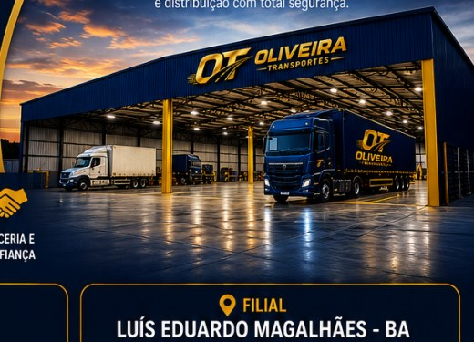
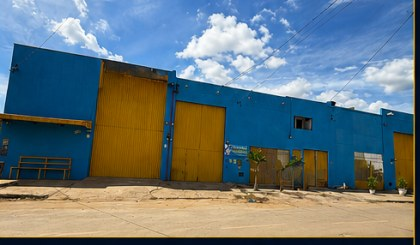
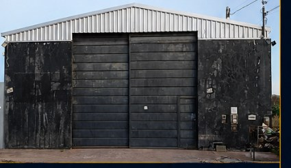

Oliveira Transportes
Não importa onde, nós entregamos.
Soluções logísticas com segurança, eficiência e compromisso para empresas do Oeste Baiano.
Quem somos
Logística regional com operação próxima, ágil e confiável.
Fundada em 2021, a OT Oliveira Transportes iniciou suas atividades no segmento de entregas e coletas, construindo rapidamente uma trajetória de confiança e excelência operacional.
Ao longo dos anos, consolidou-se como referência em soluções logísticas no Oeste Baiano, sempre focada em atender com qualidade, segurança e agilidade. Nossa atuação é pautada no compromisso com o cliente, na eficiência dos processos e na valorização de pessoas.
O que o cliente recebe na prática
- Coletas e entregas com comunicação próxima pelo atendimento.
- Rotas regionais organizadas para reduzir atrasos e improvisos.
- Base, filial e parceiros para acelerar o atendimento no Oeste Baiano.
- Estrutura para carga fracionada, distribuição e operações recorrentes.
Direção
Missão, visão e valores
Missão
Oferecer soluções logísticas eficientes e seguras, contribuindo para o crescimento dos negócios de nossos clientes através de serviços de transporte e distribuição de alta qualidade.
Visão
Ser reconhecida como a principal referência em soluções logísticas no Oeste Baiano, destacando-se pela excelência operacional, inovação e satisfação dos clientes.
Valores
- Compromisso com o cliente
- Ética e transparência
- Segurança nas operações
- Respeito às pessoas
- Eficiência e qualidade
- Inovação contínua
- Responsabilidade e confiabilidade
Serviços
Soluções para cada etapa da operação logística.
Entregas e coletas
Retirada e entrega de mercadorias com processo claro, comunicação ativa e foco em prazo.
Distribuição urbana
Operação regional para abastecimento de empresas, com rotas planejadas e atendimento recorrente.
Transporte rodoviário de cargas
Transporte de cargas leves e médias entre cidades atendidas no Oeste Baiano.
Cargas fracionadas
Consolidação de volumes para reduzir custo e manter regularidade nas entregas.
Armazenagem
Estrutura de apoio para recebimento, organização, consolidação e expedição de cargas.
Logística dedicada
Atendimento sob medida para operações com demanda frequente ou necessidade de controle próximo.
Soluções logísticas personalizadas
Planejamento de rotas, parceiros e recursos conforme o perfil da carga, prazo e volume.
Comércios e distribuidores
Reposição regional, entregas recorrentes e distribuição urbana com atendimento ágil.
Empresas com volume frequente
Organização de rotas, consolidação de cargas e acompanhamento operacional.
Operações sob demanda
Suporte para coletas pontuais, cargas fracionadas e entregas com necessidade especial.
Diferenciais competitivos
Operação pensada para reduzir tempo, risco e improviso.
Da coleta à entrega, o trabalho é conduzido com foco em previsibilidade, cuidado com a carga e resposta rápida ao cliente.
Coleta
Alinhamento da carga, cidade, prazo e condições de atendimento.
Consolidação
Organização dos volumes para otimizar rota, espaço e agilidade.
Transporte
Deslocamento regional com veículos fechados e equipe preparada.
Entrega
Comunicação e cuidado para concluir a operação com confiança.
Cobertura regional
Atendimento em 30 cidades do Oeste Baiano.
Presença regional com base em Barreiras, filial em Luís Eduardo Magalhães e parceiros estratégicos para dar agilidade ao atendimento.
Nossa frota
Frota nova, revisada e preparada para entregas regionais.
Operamos com veículos fechados, bem conservados e adequados para diferentes perfis de carga. A prioridade é manter cada entrega segura, organizada e pontual, sem expor detalhes operacionais desnecessários.
Nossos galpões
Estrutura que garante segurança e eficiência.
Contamos com galpões amplos, organizados e estratégicos, preparados para armazenagem, consolidação de cargas e distribuição com total segurança.


Base operacional
Barreiras - BA
- Área ampla
- Organização
- Segurança
- Agilidade
- Localização estratégica

Filial
Luís Eduardo Magalhães - BA
- Área ampla
- Organização
- Segurança
- Agilidade
- Localização estratégica
Em cada entrega
Compromisso do início ao fim.
Segurança
Transporte seguro do início ao fim.
Pontualidade
Cumprimos prazos com seriedade.
Rastreamento
Acompanhamento e comunicação.
Integridade
Cuidado total com sua carga.
Atendimento
Equipe pronta para atender você.
Qualidade
Excelência em cada processo.
Condições de atendimento
- Orçamentos são avaliados conforme cidade, volume, urgência e perfil da operação.
- Condições especiais podem ser combinadas para grandes volumes, cargas fracionadas e operações dedicadas.
- Prazos dependem das condições operacionais, logísticas e da região atendida.
- Em todas as cidades atendidas, a empresa conta com parceiros para mais agilidade no atendimento.
Fale conosco
Solicite agora seu orçamento logístico.
Informe sua cidade, tipo de carga, peso aproximado e urgência da entrega para receber uma orientação rápida pelo WhatsApp.
- (77) 99104-0938
- Base operacional
- Barreiras - BA
- Filial
- Luís Eduardo Magalhães - BA